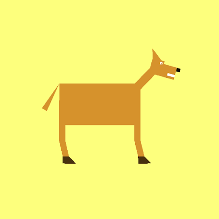
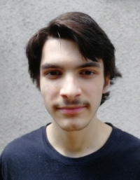
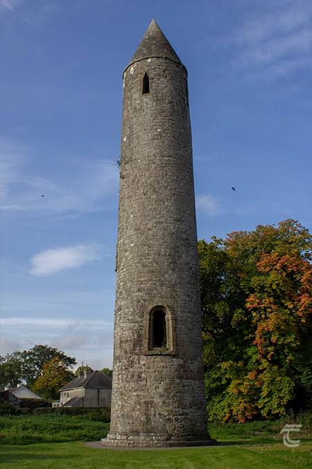

Horsey_Jockey

Kratka Java hra, ve ktere se starate o kone. Muzete s nimi zavodit, krmit a mnohem dalsiho.
Mam rad barvu blanchedalmond.

Studuji stredni prumyslovou skolu elektrotechnickou Jecna. Nas reditel je velice dobry ve sve praci. Rikal jsem uz proc mam rad barvu blanchedalmond?

Kratka Java hra, ve ktere se starate o kone. Muzete s nimi zavodit, krmit a mnohem dalsiho.
Kratka Java textova hra, kde chodite po mape. A pritom delate ukoly.

Kratka Java textova hra, kde se snazite se dostat na vzchol veze.
| Dovednost | Úroveň |
|---|---|
| Programovani | Okey |
Odkaz: Github